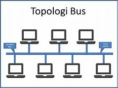
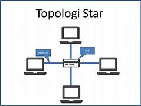
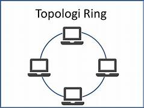
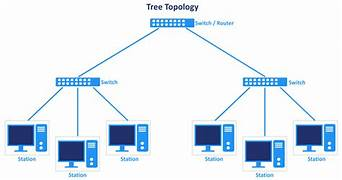
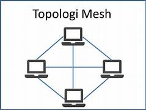
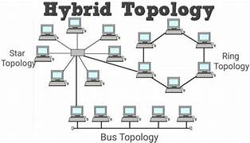
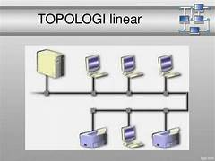

Pengertian, Macam - Macam, Kelebihan Dan Kekurangan Topologi Jaringan
Topologi Jaringan Komputer
ditulis oleh Billy Wicaksono. Pada 29 Oktober 2024
Untuk membangun sebuah jaringan komputer agar tertata dan terstruktur dengan baik maka di perlukan topologi. Topologi jaringan ini akan mempermudah anda untuk merancang sebuah jaringan komputer khususnya jaringan LAN.
Saat ini ada bermacam-macam topologi jaringan komputer yang tersedia untuk digunakan. pemilihan topologi sendiri berdasarkan pada skla jaringan, pengeluaran biaya, tujuan, serta penguna. Topologi jaringan awal kali yang digunakan ialah topologi Bus dan terus berkembang berbagai topologi baru.
Pengertian Topologi Jaringan Koomputer
Topologi Jaringan adalah skema desain pembangunan sebuah jaringan komputer untuk menghubungkan dua komputer atau lebih. Topologi jaringan menghubungkan antar unsur-unsur dasar penyusun jaringan yakni node, link, dan station.
Pada dasarnya penggunaan topologi jaringan merupakan hal mendasar yang perlu di tentukan sebelum membangun sebuah jaringan komputer, tujuanya supaya dapat dimanfaatkan dengan baik sesuai kebutuhan pengguna jaringan.
Macam-Macam Topologi Jaringan Komputer
Ada banyak variasi atau jenis-jenis topologi jaringan dengan kelebihan serta kekurangan tersendiri. Berikut penjelasaan macam-macam topologi jaringan komputer besertakelebihan dan kekuranganya lengkap dengan gambar sebagai berikut:
1. Topologi Bus
Pengertian topologi Bus adalah topologi jaringan yang hanya memnggunakan satu kabel coaxial untuk media transmisi, yang mana kabel tersebut sebagai pusat untuk seluruh server yang tersambung.
Tiap-tiap pc dihubungkan ke kabel utama dengan memakai konektor BNC, kemudian diakhiri dengan terminator apabila koektor BNC telah tersambung dengan kabel Coaxial.
Kelebihan / Keuntungan Topologi Jaringan Bus
- Penataan jaringan cukup sederhana.
- Penambahan server baru cukup mudah, karena penambahan tidak menggunakan jaringan pada server.
- Hemat dalam pemakaian kabel serta biaya karenan hanya menggunakan satu kabel utama.
Kekurangan / Kelemahan Topologi Jaringan Bus
- Jalan lalu lintas data cukup padat karenan bolak balik.
- Apabila penggunaan pada jarak jauh dibutuhkan repeater.
- Sulit melacak permasalahan ketika terjadi kerusakan jaringan.
2. Topologi Star
Pengertian topologi Star adalah topologi jaringan yang menggunakan penghubungan (Hub/Switch) sebagai pusat pengolahan informasi dan setiap komputer tersambung ke Hub/Switch. Hub/Switch ini terletak di pusat yang berperan sebagai penghubungan satu komputer ke komputer lainya baik sisi client maupun server.
Ciri dari topologi star adalah setiap node terhubung langsung ke server pusat, data yang mengalir dari node dan kemudian ke server pusat dan kemudian di teruskan ke node tujuan. jika ada kerusakaan pada salah satu node, maka jaringan lain tidak akan terpengaruh.
Cara kerja topologi star ialah saat komputer mengirim informasi antar satu denfan yang lainya, maka informasi tersebut wajib mengalir ke Hub/Switch terlebih dahulu, kemudian setelah itu mengarah ke komputer yang dituju.
Kelebihan / Keuntungan Topologi Jaringan Star
- Tingkatan keamanan tergolong tinggi.
- Mudah dalam penambahan komputer baru.
- Apabila terdapat masalah, mudah untuk dideteksi.
Kekurangan / Kelemahan Topologi Jaringan Star
- Apabila Hub/Switch rusak maka seluruh jaringan akan terputus.
- Cukup Boros dalam pemakaian kabel.
- Biaya pembangunan jaringan lebih mahal.
3. Topologi Ring
Pengertian topologi Bus adalah topologi jaringan yang hanya memnggunakan satu kabel coaxial untuk media ransmisi, yang mana kabel tersebut sebagai pusat untuk seluruh server yang tersambung.
Titik yang terdapat pada topologi jaringan cincin tersebut berperan menguatkan sinyal di tiap rangkaiannya ataupun sebagai repeater. Metode kerjanya ialah komputer 1 berencana mengirim file ke komputer 3, agar terkirim maka file wajib melewati komputer 2, baru setelah itu komputer 3 menerima file tersebut.
Dengan tata cara semacam itu, sinyal serta aliran informasi tetap akan normal. Arah aliran informasinya dapat searah jarum jam ataupun berlawan dengan jarum jam, tergantung dengan kebutuhan pengguna.
Cara kerja topologi jaringan ring yakni setiap node pada sentral memiliki penguat sinyal di kedua sisinya, sehingga setiap perangkat dapat bekerja sama untuk menguatkan sinyal. Alat bernama token akan membantu saat proses penerimaan dan penerusan sinyal.
Kelebihan / Keuntungan Topologi Jaringan Ring
- Mudah dalam perencangan awal jaringan.
- Jika terdapat masalah mudah dilakukan konfigurasi ulang.
- Hemat dalam pemakaian kabel dan biaya.
Kekurangan / Kelemahan Topologi Jaringan Ring
- Bila terdapat satu komputer yang mengalami gangguan, dapat menyebapkan jaringan lainya ikut mengalami gangguan.
- Performa aliran lalu lintas informasi tergantung pada jumlah komputer, semakin banyak komputer maka akan semakin berat pertukaran informasi.
4. Topologi Tree
Pengertian topologi tree ialah topologi jaringan yang bertingkat yang mana antar koneksi memakai Hub/ Switch serta tiap-tiap Hub tersambung dengan file server.
Topologi tree merupakan campuran dari topologi jaringan star dan topologi bus tetapi yang membedakannya ialah topologi tree ini memiliki lebih banyak Hub di dalam sistem jaringannya.
Ciri topologi jaringan tree ialah memiliki kabel utama yang berfungsi menghubungkan beberapa Hub/Switch seperti pada jaringan star yang berfungsi sebagai pusat pengatur jaringan serta memiliki tingkatan jaringan atau hierarki.
Kelebihan / Keuntungan Topologi Jaringan Tree
- Mudah diterapkan dalam skala jaringan yang lebih luas.
- Mudah dideteksi apabila terdapat masalah.
- Lebih mudah dalam mentransfer informasi.
Kekurangan / Kelemahan Topologi Jaringan Tree
- Apabila hub eror, sambungan pada setiap komputer akan terputus.
- Pengeluaran biaya tergolong besar.
- Boros pada pemakaian kabel.
5. Topologi Mesh
Pengertian topologi mesh adalah sistem topologi jaringan dimana koneksi antar PC silih tersambung secara langsung satu sama lain. Koneksi antar komputer secara langsung atau dedicated link.
Tipe topologi jaringan semacam ini diperuntukkan pada sistem topologi yang hanya mempunyai sedikit komputer. Topologi mesh memiliki kecepatan proses transfer yang lebih baik karena langsung dikirim ke komputer yang dituju tanpa perantara.
Ciri topologi mesh bisa dilihat pada pemakaian banyak kabel sebab koneksi langsung dihubungkan antar komputer. Tidak hanya itu, topologi mesh umumnya mempunyai lebih dari 2 port I/ O, dan mempunyai konfigurasi yang berbeda pada tiap node.
Cara kerja topologi mesh yaitu setiap data atau informasi akan dikirim ke node yang dituju. Karena setiap komputer memiliki kabel tersendiri, maka pertukaran informasi akan lebih cepat.
Kelebihan / Keuntungan Topologi Jaringan Linier
- Terjaminya kapasitas jalan masing-masing.
- Tingkat keamanan yang lebih baik, karena data terkirim tanpa perantara.
- Lebih mudah dalam mengenali titik permasalahan.
Kekurangan / Kelemahan Topologi Jaringan Linier
- Biaya pembangunan yang di keluarkan lebih tinggi dari topologi lain.
- Penggunaan minimal mempunyai dua kabel penghubung.
- Dibutuhkan ruangan yang cukup besar dalam membangun topologi ini.
6. Topologi Hybrid

Pengertian topologi hybrid adalah topologi jaringan luas yang terdiri dari gabungan dua ataupun lebih tipe topologi yang yang lain. Topologi hybrid tersebut mempunyai seluruh identitas serta watak dari tipe topologi yang terdapat di dalamnya.
Pembuatan topologi hybrid tersebut bertujuan buat mengoptimalkan Kelebihan / Keuntungan dari masing-masing tipe topologi dasar di dalamnya. Kala tipe topologi dasar tersambung dengan tipe topologi dasar yang beda tipe, hingga tidak terdapat kepribadian yang ditampilkan dari keduanya.
Kelebihan / Keuntungan Topologi Jaringan Hybrid
- Rancangan jaringan fleksibel, yang dapat digunakan di berbagai tempat.
- Kecepatan jaringan tergolong stabil.
- Dapat digunakan pada jaringan yang berskala besar.
Kekurangan / Kelemahan Topologi Jaringan Hybrid
- Proses instalasi lebih rumit dari pada topologi lain.
- Tergolong boros pada pemakaian kabel.
- Membutuhkan ruang yang lebih luas.
7. Topologi Linier
Topologi linier bisa juga disebut dengan topologi jaringan bus yang beruntut. Kabel utama tersambung dengan dengan tiap pc dengan penyambung T, kemudian pada ujungnya dipasang terminator. Buat tipe sambungan yang digunakan merupakan sambungan BNC( British Naval Connector).
Kelebihan / Keuntungan Topologi Jaringan Linier
- Hanya membutuhkan sedikit kabel.
- Tidak terdapat kendali pusat atau server.
- Tata peletakan kabel cukup sederhana.
Kekurangan / Kelemahan Topologi Jaringan Linier
- Sulit dalam mengetahui pusat ganguan.
- Lalu lintas informasui yang tergolong padat.
- Keamanan data pribadi kurang erjamin, karena informasi melalui pihak ketiga.
8. Topologi Peer To Peer

Pengertian topologi peer to peer adalah topologi jaringan yang menghubungkan dua komputer dengan satu buah kabel. Dapat dibilang jika topologi jaringan tipe ini merupakan yang sangat simpel dibanding dengan yang lain.
Tiap komputer di dalam jaringan topologi peer to peer bisa silih berhubungan tanpa terdapatnya server. Tiap pc dapat jadi client serta server secara bergantian.
Kelebihan / Keuntungan Topologi Jaringan Peer To Peer
- Hemat dalam pemakaian kabel.
- Setiap komputer dapat berperan sebai server maupun client.
- Proses pemasangan atau konfigurasi mudah.
Kekurangan / Kelemahan Topologi Jaringan Peer To Peer
- Tingkat keamanan tergolong rendah.
- Jaringan tergolong kecil.
- Jika salah satu komputer memiliki masalah, maka pertukaran data alan terhenti.
Copyright 21 September 2024. By Admin Lalat.